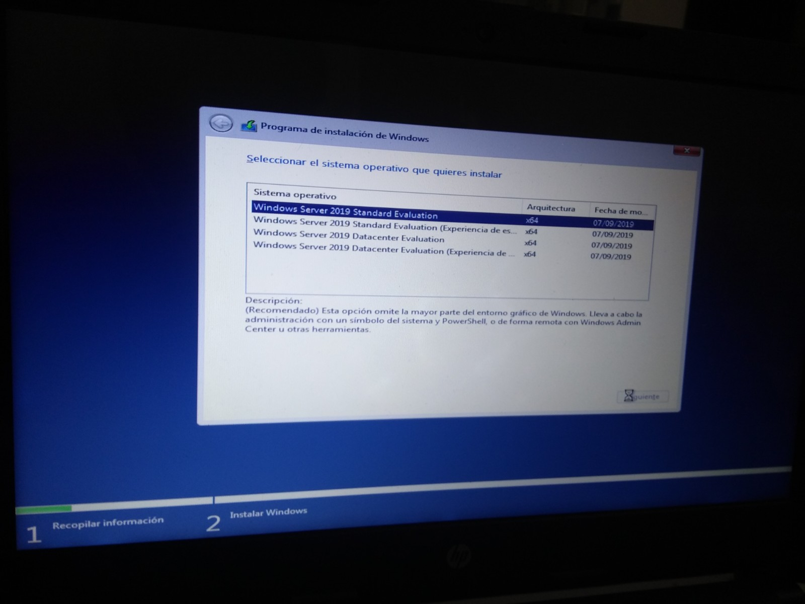
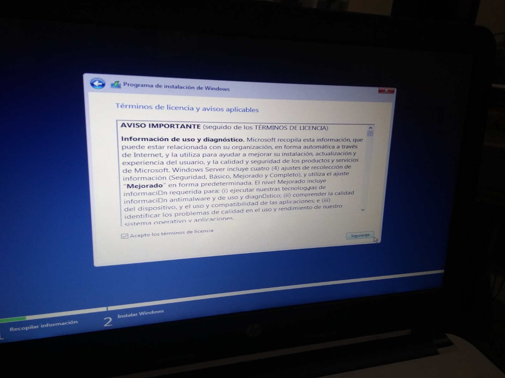
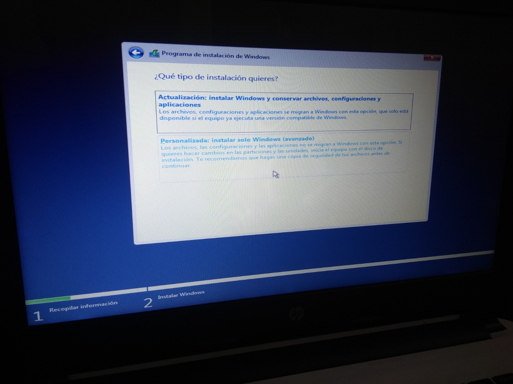
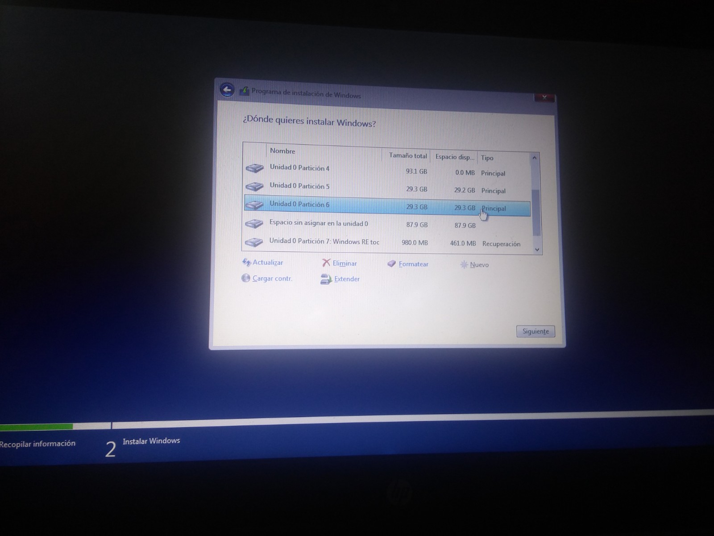
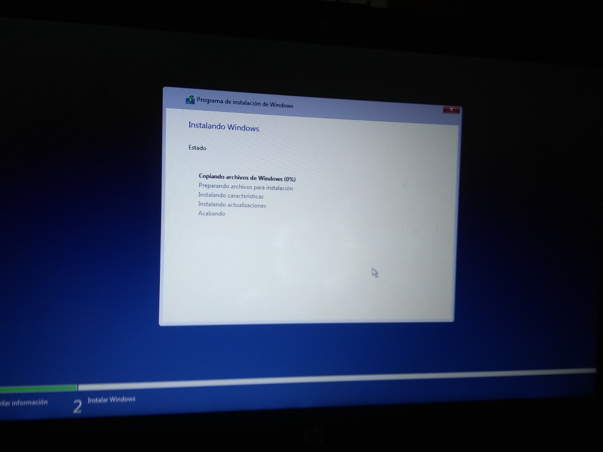
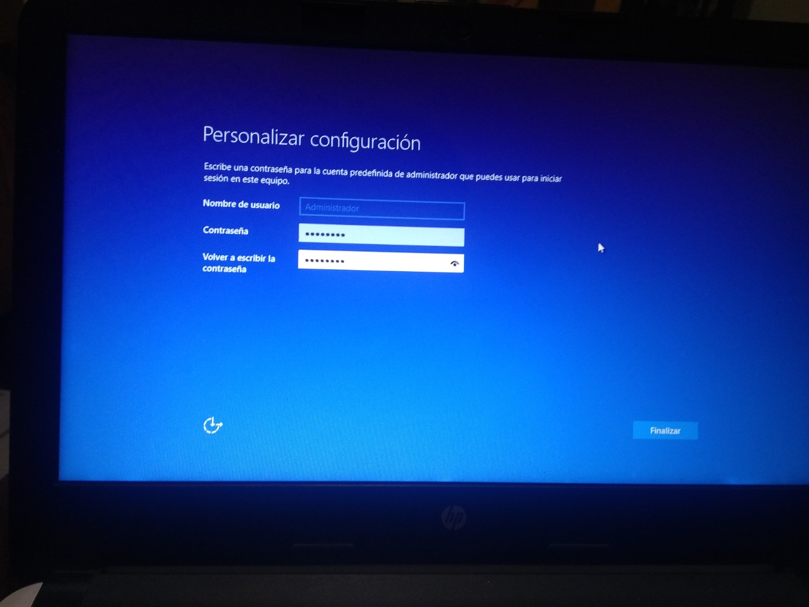

Actividad 08
Objetivo: Instala Windows Server y destaca las características de 'Active directory' y ejemplos
Windows Server
Windows Server Standard es un sistema operativo de servidor que permite a un equipo manejar funciones de red como servidor de impresión, controlador de dominio, servidor web y servidor de archivos. Como sistema operativo para servidores, también existe la plataforma para aplicaciones de servidor que se pueden adquirir por separado, como Exchange Server o SQL Server. La edición estándar está diseñada para organizaciones pequeñas y medianas con entornos de servidores físicos o ligeramente virtualizados.
Una vez corremos el sistema operativo, nos preguntará los idiomas a elegir
Después nos aparecerá una ventana con el botón de "Instalar Ahora", daremos click ahí

Una vez dado click ahí, nos aparecerá una pantalla de carga, esperaremos a que termine de cargar los archivos
Una vez cargado la información nos preguntarpa el tipo de sistema operativo que deseamos instalar. La segunda opción es la que mejor se acomoda a nuestras necesidades, por lo que seleccionaremos esa opción
Después de seleccionar el sistema operativo, aceptamos los términos y condiciones y damos en "Siguiente"
Ahora, nos preguntará el tipo de instalación que deseamos tener. En nuestro caso, necesitamos instalarlo en una partición de nuestro disco duro, por lo que elegiremos la personalizada.
Una vez dado "Siguiente" nos señalará las particiones que tengamos y nos dejará elegir la que deseamos. Seleccionamos nuestra partición.
Una vez seleccionado nuestra partición, comenzará la instalación de nuestro sistema operativo.
El sistema se reiniciará repetidas veces y aparecerá una pantalla como la siguiente
Después de terminar de cargar, empezaremos a configurar nuestro sistema operativo, lo primero será agregar un usuario y su contraseña.
Después de eso, cargará la siguiente pantalla, donde estará una pantalla de espera, eso significará que nuestro sistema operativo se ha instalado correctamente.
Active directory
Algunas características son:
- Active Directory Structure
Una característica clave de la estructura de Active Directory es la autorización delegada y la replicación eficiente. Cada parte de la estructura organizativa de AD limita la autorización o la replicación dentro de esa subparte en particular. - Controladores de dominio
Los controladores de dominio son servidores de Windows que contienen la base de datos de Active Directory y ejecutan funciones relacionadas con AD, como la autenticación y la autorización. Un controlador de dominio es cualquier servidor Windows que cuente con la función de controlador de dominio instalada. - Sistema de nombres de dominio
Aunque Active Directory contiene información de ubicación sobre los objetos almacenados en la base de datos, utiliza el sistema de nombres de dominio (DNS) para situar los controladores de dominio. Dentro de Active Directory, cada dominio tiene un nombre de dominio DNS y cada ordenador que forma parte del dominio cuenta con un nombre DNS dentro del mismo. - Replicación
Active Directory utiliza diversos controladores de dominio por múltiples razones, incluido el equilibrio de carga y la tolerancia a fallos. Para que esto funcione, cada controlador de dominio debe disponer de una copia completa de la propia base de datos de Active Directory de su dominio. La replicación es el proceso que garantiza que cada controlador cuente con una copia actualizada de la base de datos.